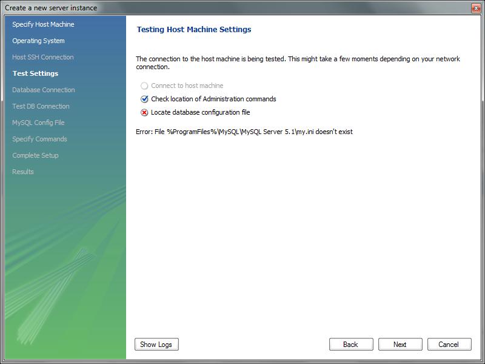
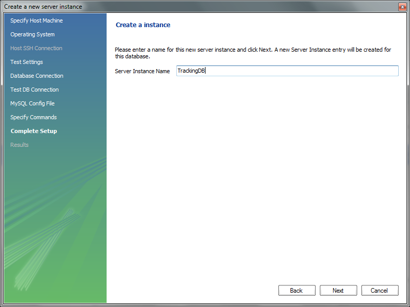

Object Name Service
Introduction
In this document, we shall present an implementation of the Object Name Service (ONS) as defined in the EpcGlobal framework.
The ONS service (both local and root) shall:
- (For the root ONS) Given an EPC, can return a list of network accessible service endpoints that pertain to the EPC in question. ONS does not contain actual data about the EPC. It only contains the network address of services that contain the actual data. ONS is also authoritative in that the entity that has change control over the information about the EPC is the same entity that assigned the EPC to the item to begin with. For example, in the case of an SGTIN EPC, the entity having control over the ONS record is the owner of the SGTIN manager number (EAN.UCC Company Prefix)
- (For the local ONS) Fulfills ONS lookup requests for EPCs within the control of the enterprise that operates the Local ONS; that is, EPCs for which the enterprise is the EPC Manager.
Along with the implementation of the ONS server, an application that enables tracking of products between inter-enterprise EPCIS repositories is provided. This application shall
- Implement and expose a new /tracking interface for the ASPIRE Information Sharing Repository, along with the /query and /capture interfaces. This new interface can be used by an external accessing application to obtain data about any EPC tag belonging to this particular company/repository. Data includes both events from the local repository and data reported from foreign domains as products move to them. The tracking interface is a SOAP interface.
- Collect data reports about an EPC tag from foreign tracking deployments. Data includes at least time, date, geographical coordinates and information about the company which received the item and issued the data. Data can also include details about the particular item (name, features, price, date of production e.t.c) if available. All data of this kind is stored in a local database, separate from the EPCIS repository database.
- Poll the attached EPCIS repository periodically for any events regarding EPC tags having a company identifier different than the one designated as ‘parent company’. Events are grouped together by company, a query is send to the ONS server for an EPCIS/tracking service endpoint, and an attempt is made to report the events.
User Guide
Requirements
Hardware (minimum)
- P IV 1.2GHz or equivalent
- 512 MB Ram
- 50 MB free HD space
Software
- Java 1.6
- Tomcat 6.0 (or higher) or another server for web-services. (This guide assumes that you use an Apache Tomcat server.)
- MySQL 5.0 (or higher).
Deployment
This section includes a step-by-step tutorial describing how to set up your own ONS server and the tracking application add-on to the Epcis Repository
- Download and install a fully functional EPCIS repository, following the instructions on the appropriate wiki page. Populate the repository with sample data.
- Download aspireRfidOnsTrackingService.zip from the project Forge page.
Database installation and creation
The tracking application was developed (and is preconfigured) to work with the open source MySQL relational database. Following are installation and configuration instructions for the MySQL database, along with a brief guide on how the user can configure the application to work with other relational databases. The installation instructions refer to a windows platform (although most of them apply to linux platforms also)
- MySQL installation (skip this step if MySQL is already installed in your system)
- Go to http://www.mysql.com/downloads/mysql/ and download the MySQL community server (version 5.5.8 as of writing this document) package appropriate for your operating system (for windows platforms choose the .msi installer)
- Follow the instruction and install MySQL at a place of your choosing. Accept all default parameters (unless you have other needs and you know what you are doing). Make sure you choose to start the server after the installation is done
- During the installation you will be asked to create the ‘root’ user. Create the user and note down the password for later use.
- Go to http://www.mysql.com/downloads/workbench/ and download the MySQL Workbench (version 5.2.31a as of writing this document) package appropriate for your operating system
- Install MySQL workbench and launch it. From the main screen of the program select ‘New connection’ .
- The following screen should appear
- Give a connection name of your liking. If you installed MySQL with the default parameters then hostname should be 127.0.0.1 and port should be 3306. Leave the username as root and enter the password you selected during installation. Press the ‘Test Connection’ button to make sure everything is ok and then ‘OK’. The connection should have now appeared to the list on your left on the main screen of the program.
- Select ‘New Server Instance –from the list on the right of the main screen
- On the popup screen select localhost
- Select your software platform

- Ignore any missing configuration file warnings

- Select the connection you created on the previous step
- Give a name your newly created instance and you are done

- By double clicking the instance you created, you can manage all aspect of your mysql_server. If the server is not running, you will get a warning. Select ‘continue anyway’ and you can start the server from there .
- Schema creation and user configuration
- The following instructions and provided scripts assume that you used MySQL community edition as your relational database. If you used any other database, then the needed schema must be created manually according to the provided EER diagram
- Double click the connection you created in the previous part of the guide –make sure the server is running. The following screen should appear
- Select ‘File->Open SQL Script’ and choose the provided TrackingDBCreation.sql you downloaded
- Run the script. It should create the needed schema for the tracking application. The script does not create any users or grant any privileges to the schema. These have to be created manually. Close the SQL editor and double click the database instance you created –from the right part of the main program screen.
- Select the accounts tab, and click ‘Add account’
- Input a login name, password, localhost as the host matching criteria and click apply (see photo for details). Note down the username and password.
- Go to the ‘Schema Privileges’ Tab. Select the user you just created and click on ‘Add Entry’
- On the screen that will pop-up choose: SelectedHost:localhost and SelectedSchema: epcis_tracking. Then press ‘Ok’.
- On the bottom of the screen click ‘Select ALL’ – to give the new user all privileges on the schema – and then ‘Save changes’
- We are now ready. Next step is to edit the application configuration files for database access and for our company .
Application configuration files
There are 2 main configuration files that should be edited according to the database installation and the user needs. The first file is about the Hibernate O/R mapping framework our application uses to access the database. The second is the properties file for the application. Extract the aspireRfidTracking.war file you downloaded to a folder in your hard disk. It should create 2 folders named WEB-INF and META-INF. You can use any archive manager you like (a free option for Windows based platforms is 7-Zip )
..\WEB-INF\classes\hibernate.cfg.xml
- “hibernate.connection.driver_class”
- Default: “com.mysql.jdbc.Driver”
- Set: Don’t change if you used MySQL. In other cases change this to the class name of your connector class
- “hibernate.dialect”
- Default: “org.hibernate.dialect.MySQLDialect”
- Set: Don’t change if you used MySQL. In other cases, consult the appendix for a dialect that matches your database provider (or the Hibernate Documentation for more resources)
- “hibernate.connection.username”
- Default: “user”
- Set: Change this to the username of the user you created on the previous step
- “hibernate.connection.password”
- Default: “pass”
- Set: Change this to the password of the user you created on the previous step
- “hibernate.connection.url”
- Default: “jdbc:mysql://localhost:3306/epcis_tracking”
- Set: Don’t change if you used MySQL and installed with default options. In other case consult your software vendor’s manual.
..\WEB-INF\classes\tracking.properties
- localEpcisInterface
- Default: http://localhost:8080/aspireRfidEpcisRepository/query
- Set: The query interface URL of the EPCIS repository the tracking application is attached to
- localONS_Resolver
- Default: 127.0.0.1
- Set: IP of the local ONS server (see ONS section for more details)
- exportedEpcisInterface
- Default: http://localhost:8080/aspireRfidEpcisRepository/query
- Set: This is what will appear as the remote URI to the foreign tracking application. It can be used by the other party to obtain more information about reported epc events
- companyName
- Default: ASPIRE Inc.
- Set: Your company name
- companyDesc
- Default: RFID Solutions
- Set: A brief description of your company
- companyAddress
- Default: 19.7Km Markopoulou Ave
- Set: Company’s address.
- companyCountryCode
- Default: GR
- Set: Company’s country code.
- companyRegion
- Default: Attica
- Set: Company’s region, state or province e.t.c
- companyEmail
- Default: komo@aspire_inc.gr
- Set: Contact email
- companyTel
- Default: +302106671836
- Set: Contact landline
- companyFax
- Default: +302106672478
- Set: Contact Fax
- companyIdentifier
- Default: 000
- Set: This is the unique company identifier as defined by the EPCIS standard. This numerical in always the first component on any epc urn that is assigned to the company domain. The application uses this to filter out any data from the local EPCIS repository that are for own epc tags.
- lattitude
- Default: 37.939605
- Set: A default latitude attribute for generated events that don’t carry such information. Can be set to any relevant to the epcis repository location.
- longtitude
- Default: 23.874013
- Set: As above
- pollPeriod
- Default: 10000
- Set: The poll interval (in msec) the program should wait before it checks for any new events to report
- startTimeDate
- Default: 2010-10-04 18:09:24
- Set: On startup, the tracking interface will only poll for events newer that this time/date. This is updated every time a poll is made, so we get only the newer events each time .
After you have edited the files, repack everything into the original archive aspireRfidTracking.war .
ONS installation
- Platform choice and implementation
As per the ONS specification, each company assigned part of the epc namespace, should maintain an appropriate ONS server for that namespace. Our application uses these ONS servers to find out the appropriate foreign tracking interfaces to report epc events. The ONS server is actually a properly configured DNS server with NAPTR records for the part of the namespace the server is qualified. Any DNS implementation and platform combination is a valid option. We used the popular, open source and reference BIND implementation of DNS on windows machines. Ideally a realistic setup for our application involves one ONS server per company. For demonstration needs we will present a setup where a single ONS server contains information for EPC’s belonging to several different domains. The guide assumes at least basic information on what DNS (very helpful on this matter is the BIND manual available at
http://www.isc.org/software/bind/documentation) .
- DNS Installation
- Go to http://www.isc.org/downloads and select ‘Windows Download’ of the latest BIND release (version 9.7.2-P3 as of writing this guide).
- Follow the very helpful instructions on http://alex.charrett.com/bind-on-windows-mainmenu-3 up to the point of Configuring your zone ( if you don’t want to go though the BIND installation manual)
- The scenario also assumes that while populating your EPCIS repository with sample data, you did so with tags having at least 2 different company identifiers. Let us assume that one of them is 1 –for your company – and the other one is 145 – for one of your clients. Modify your named.conf according to the one provided. Also following the instructions on how to configure your zones – from the site mentioned at the previous step, alter if needed the 2 provided zone files and copy them at the appropriate folder. If needed modify again the entry on tracking.properties file for the company identifier.
- Save everything and start the DNS service – or restart it
- Make sure it runs correctly, and that your firewall does not block traffic on TCP and UDP ports 53 (the default for DNS requests) .
Final steps
Copy aspireRfidTracking.war to the Tomcat webapps folder. Launch tomcat and you should be set.
Developer Guide
 PDF
PDF History
History


{kind=link}
{kind=link}
{kind=link}
{kind=link}
{kind=link}
{kind=link}
{kind=link}
{kind=link}
{kind=link}
{kind=link}
{kind=link}
{kind=link}